Building trust & confidence
12 minute read
![A mobile device sits in front of a desktop device. Desktop shows the opening screen of the new registration flow. Title says 'Take a moment for yourself', followed by copy 'Unmind helps you lead a more balanced and fulfilling life by nourishing your mind'. An illustration shows a bearded man meditating while floating cross-legged. The mobile shows the final screen of the flow. Title says 'Welcome to Unmind Koda', with a button entitled 'Get started'. An illustration shows a plant growing to symbolise mental wellbeing growth.](img/adoption/adoption-unmind-hero@1x.png)
Adoption team
Product manager: Esther Bretschneider
Team engineering lead: Wing-Hou Chan
Project engineering lead: Rob Wood
Engineers (iOS, Android, and Web): Laurence Roland James, Cameron Newby, Will Donohue, Kerim Hudson
Product designer: Me
Support roles
UX researcher: Cait Griffin
Data scientist: Ziedo Solomon
Growth marketer: Sally Florey
My role
UX and UI design (Web / iOS / Android), workshop facilitation, usability testing, research, art direction
The problem
Everybody’s mental health and wellbeing is personal to them, and so when using a product to track and measure this, people want to know that their personal data is private and secure. This is doubly so when the product being used is a workplace employee benefit. Employees need to be able to trust the promise that their personal health data won’t be used against them, and reassured that the platform is professional and privacy focused.
The Unmind registration journey was the bridge that connected from an employee's Unmind introduction to the platform itself, but it wasn’t providing the secure re-assurance users needed to fully place their trust and confidence in our product — almost 51% of employees never completed their account creation after entering the registration flow.
TL;DR
The solution
Within six months our team had rolled out a new, and significantly improved, registration flow across web, iOS, and Android. By increasing employee trust right from the very beginning, combined with much improved usability and motivating user progress, employees felt more at ease and comfortable creating an Unmind account.
Answered privacy concerns
After further exploring user privacy concerns we discovered two main overarching issues — what data did Unmind share, and what data did the employer see? Answering these issues earlier in the flow alleviated many of the concerns employees had.
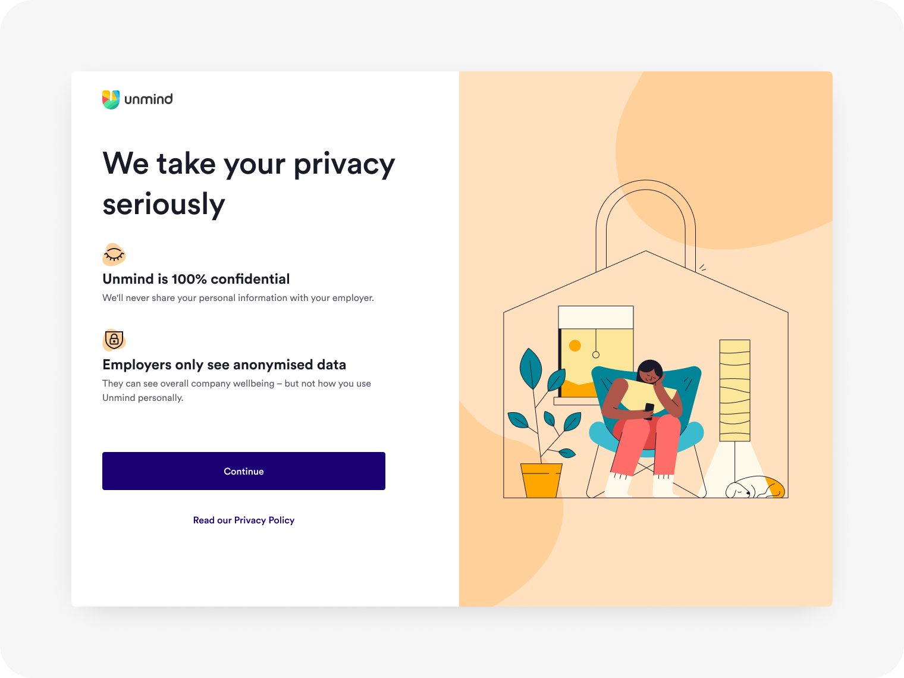
Made registration feel like a breeze
Chunking the registration into understandable steps made for a more stress-free flow. Less things to do on the screen meant people were less overwhelmed, and led to a better sense of progression.
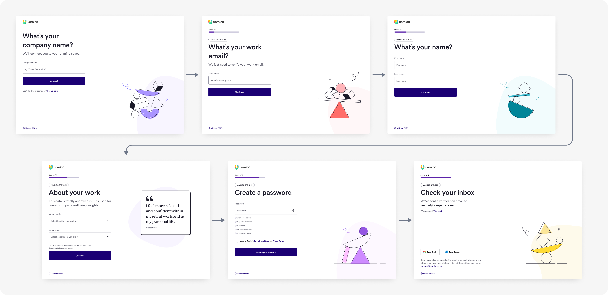
Made it easier for users to find their company
No more having to recall “special” company codes — employees could now use the everyday familiar company names they knew to easily find their company. Improving this recognition over recall moment removed an early blocker to registration entry.
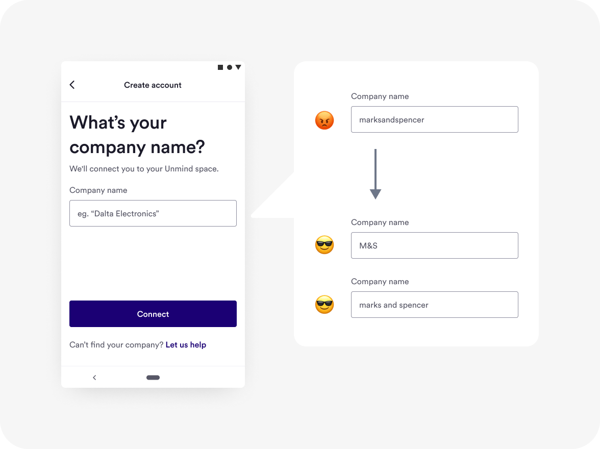
Created a more friendly look & feel
Creating a story-arc of the employee registration journey allowed us to design for moments of interest and “warmth” using our brand, and add a foundational consistency with a UI framework. This in-turn created a more attractive, professional, and cohesive flow, acting as a first indicator of trust for people.
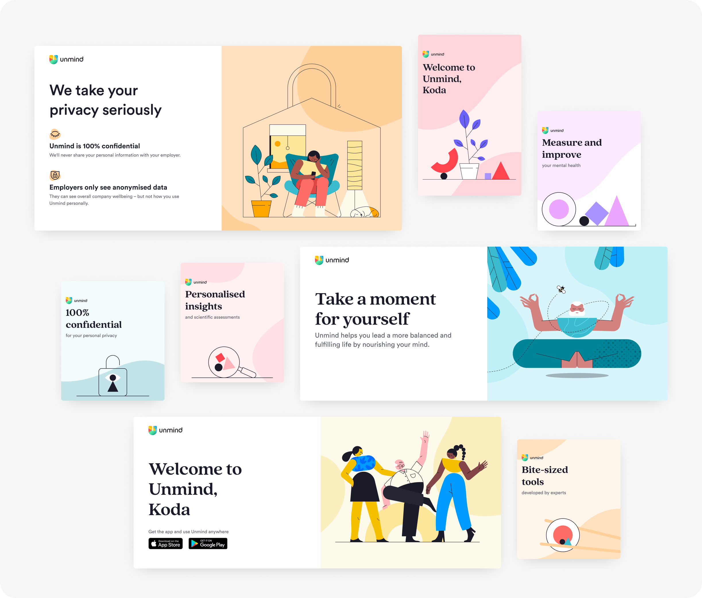
Built with a “usable means accessible” mindset
Accessibility-first thinking was foundational in making the registration task more usable for all. This approach meant more people, no matter their access needs, increased their trust in Unmind as there were less barriers to easily register.
![A montage of four accessibility improvements. 1. 'Create password' field now shows each password rule, and marks them as completed when done — this is done both visually and for access devices. 2. Landscape orientation is available for all platforms and devices. 3. Illustrations have alt-text that describe what is happening and and emotional context as visuals try to convey. 4. Swiping through a native devices introduction carousels can now be done in a variety of ways for people of differing abilities and access needs.](img/adoption/solution_a11y_desktop@1x.png)
Outcomes
+4.4%
Registration increase (after 45 days)
+A11y
Driver of a product-wide accessibility initiative
Read the full casestudy below 🤓
A little context
Background
Who is Unmind?
Unmind is a workplace mental health and wellbeing B2B2C platform. It offers ways for employees to proactively measure, understand, and improve their own mental wellbeing with guided meditations, podcasts, and daily advice. Organisation such as Uber, Asos, and the NHS offered our platform to their employees as part of their workplace benefits package.
Headspace and Calm had set people's expectations of what a mental wellbeing app should be — and Unmind wasn't meeting these expectations. Part of my remit, as the new senior product designer on the Adoption team, was to bring Unmind up to that next level — from a “finding its feet” startup to a professional, respected, and trusted platform.
Getting to know the flow
To get an understanding of the current flow I spent some time going through it with my UX hat on — needless to say I came away some opinions.
- It was a purely basic and functional experience
- There was no brand continuation from the website into the registration form
- Accessibility had not been considered
It was clear that Unmind had fantastic expert content, but large swathes of the product, including registration, needed lots of product design attention.
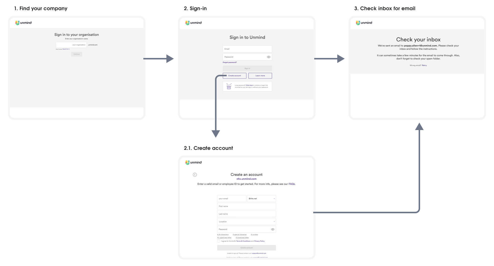
Driving user adoption
Driving user adoption was a key strategic opportunity for Unmind to continue its trajectory of strong growth (which of course investors want to see), and to confidently attract and retain clients.
To help improve Unmind’s user adoption we set ourselves the goal to increase sign up conversions across web and mobile platforms by 5%. To do that we needed to do two things.
- Understand where we were failing users in the registration flow
- Build a user’s trust and confidence in the Unmind platform — the registration journey being a key moment to do this
The kickoff
What's known?
Understanding known problems
I facilitated two workshops to better understand known user pain-points and quantitative metrics. These workshops also doubled as a way to engage and start building a rapport with important stakeholders from product, marketing, data, and customer service.
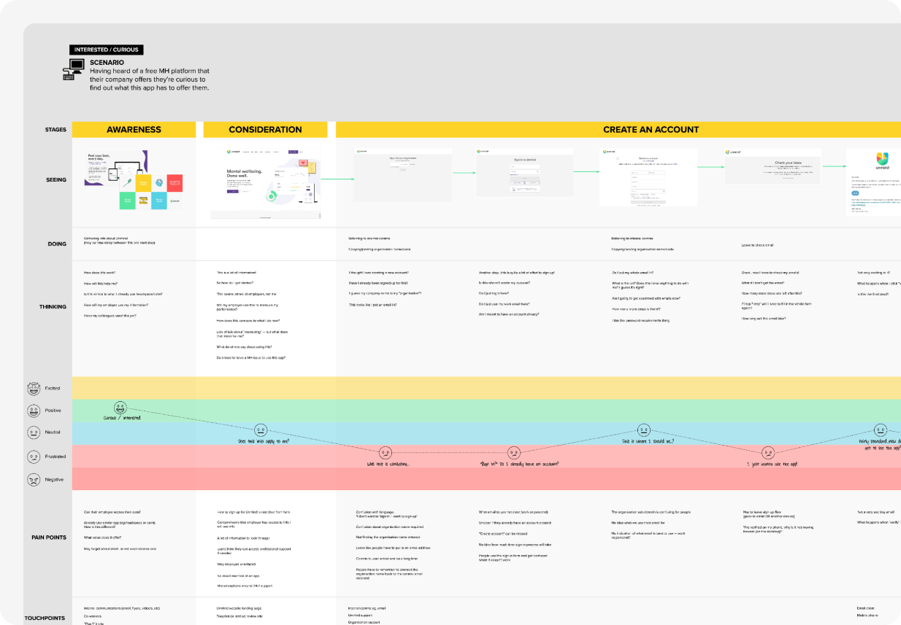
Key learnings
- Only about 49% of users had successfully created an Unmind account in the past year
- The Unmind website homepage presented unclear value to employees
- Employees had to remember a unique company code
- User confusion was common due to language and layout
- The visual aesthetic was bland and unexciting
Discovery
Uncovering the real problems
Our research not only focused on the registration journey, but also on the awareness and consideration stages before. We wanted to know how people discovered Unmind, what did they think Unmind offered, and what pain-points did they bring into the registration flow?
Unanswered privacy and trust concerns
“What if someone is not feeling [mentally] well? Are you going to alert the employer?”
Throughout our research people expressed concern around the privacy of their personal data — how was their data used to help them, could they be personally identified, and how did Unmind and their company use this data? We found that trust is essential when it comes to mental wellbeing — especially in the workplace.
Low comprehension of Unmind’s value
"It doesn't really tell me like how you do things other than, you know, general stuff to do with your mental health?”
The value of Unmind, and what we actually offered employees, was not made clear on Unmind’s website. Employees were coming into the registration flow still unsure of what Unmind would do to help them with their mental wellbeing.
Lack of registration clarity
“I’d probably give up now.”
The registration process was found to be confusing right from the start. There was no clear direction of where an employee should navigate to, where they were, or where to go next. We ended up placing too much onus on the employee to recall special company codes and “just know” why things weren’t working.
Design direction
Moving towards trust
In my experience there are three user needs that need fulfilling to have a likelihood of successfully completing a registration — motivation, trust, and ease of use (no usability, technical, or accessibility barriers).
For the employees entering Unmind’s registration flow there was a motivation (or at least a curiosity), but trust and ease of use were severely lacking. These three overarching needs, combined with our research insights, become my northstar design guidelines.
Design guidelines
- Provide confidence right from the start (improve user trust / motivation)
- Create a warm and friendly environment (improve user motivation)
- Usability means accessibility too (improve product ease-of-use, improve user trust)
- A bad actor should not know who uses Unmind (improve user trust)
Collaboration in the solution space
Exploration
Bringing new knowledge to ideation
The insights we uncovered during discovery were also turned into “how might we?” questions to bring into ideation workshops with various business stakeholders. Collaborating internally like this always allows me to validate directions I may have been thinking of, bring in new and different domain knowledge, and find out different lived experiences people bring to the problem.
HOW MIGHT WE...
improve the sign-up experience, so that customers stay motivated, excited & curious about Unmind?
HOW MIGHT WE...
provide privacy & data re-assurance to concerned employees, so that they feel confident & safe using Unmind?
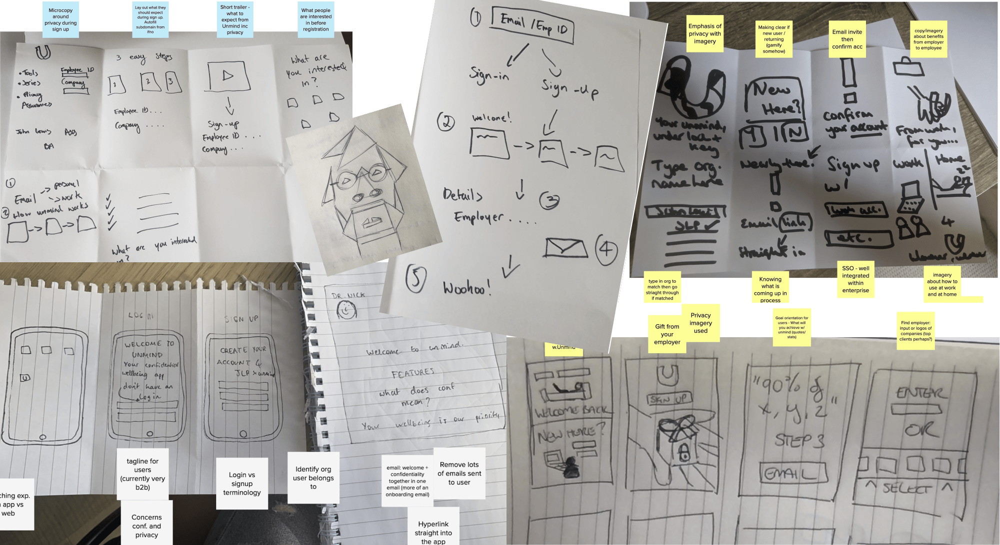
A focus on impact and a tight feedback loop
After these ideation sessions myself, Rob (lead engineer), and Esther (product manager) gathered the best ideas, and combining with our own ideas, we ran a risk vs impact prioritisation exercise to decide which directions and ideas we wanted to further explore.
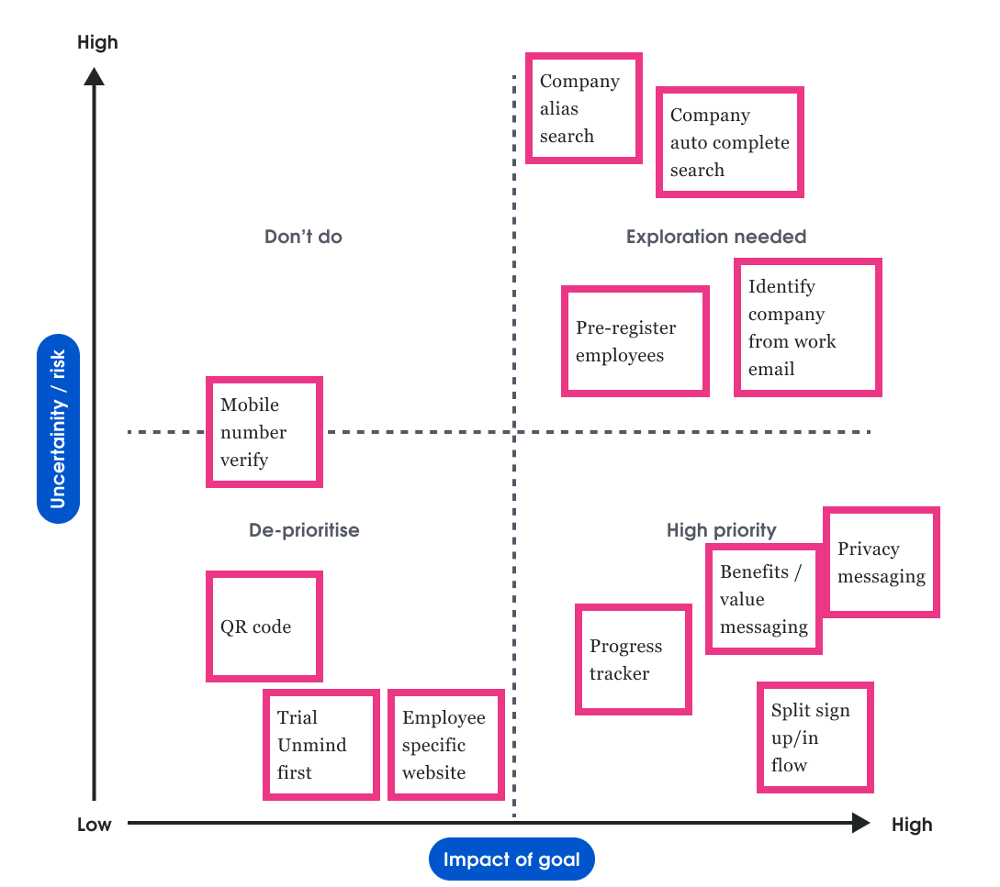
With continual feedback from Rob and Esther I would explore user flows, and once we all aligned, I would create lo-fi prototypes which we would user test. In parallel with this Rob was also developing throw-away coded prototypes to explore technical feasibility issues with the rest of the engineering organisation.
These cycles of user and technical feedback were then folded back into our next iteration of the flows until we had a conceptual registration flow that we were all confident moving forward with.
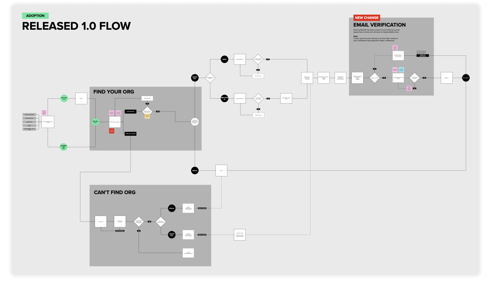
The solution
Building trust and confidence
Make the path clear
Right from the very start we were confusing employees who just wanted to create an account. There were three areas where we made sure to help the user easily understand the path to be on.
1. Entry from website
Most employees registered and signed-in through Unmind’s website, but we were not making it clear at all where they should go — they only had a confusing “Sign in” button. The website was owned by an external agency so we could only make a minor change to the button language. It wasn't the most elegant of solutions, but it worked.
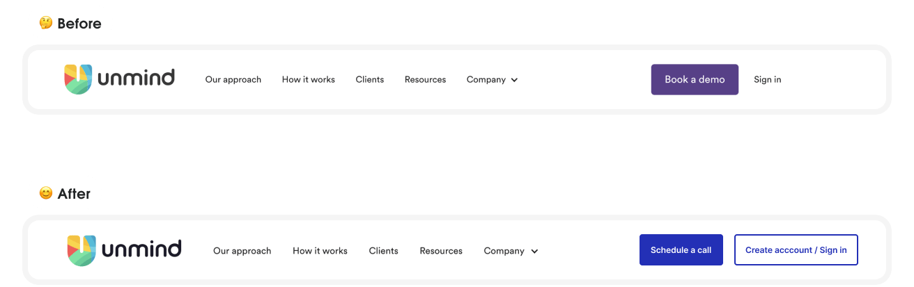
2. Registration start
During user testing we saw a large percentage of people struggle to recognise that they were starting in the “Sign-in” area and needed to switch to “Create account” area. This was because the “Create account” button had low findability due to having the same lower hierarchy as the “Learn more” button. I redesigned this introductory step to be a split pathway that’s easy for employees to distinguish.
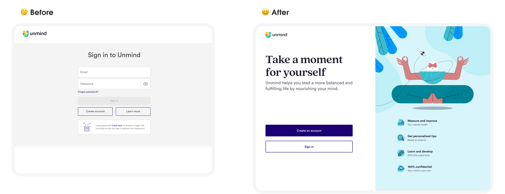
3. Support access at your fingertips
We heard from both users, and customer support, that easier support access was needed if someone ran into registration problems. We made sure that a consistent link was available across the whole journey, and myself and Esther (PM) worked with customer service to update and improve the FAQ’s.
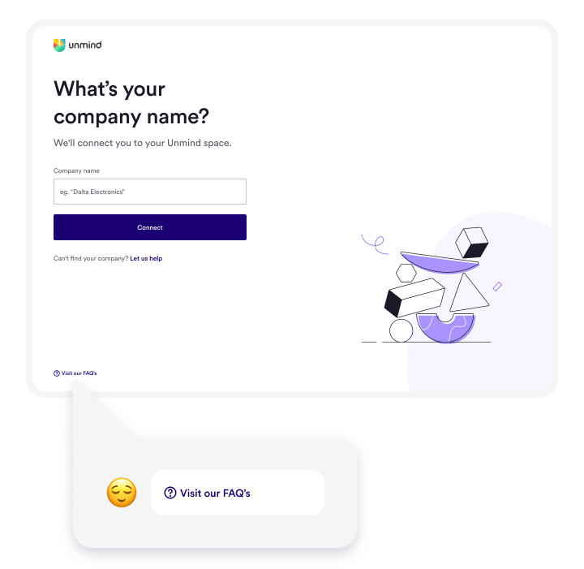
When testing these changes we saw absolutely no confusion, roadblocks, or friction occurring anymore for users wanting to sign-in or create an account. Even though these were basic design changes, our users' trust and confidence in Unmind was now not undermined from the very start.
Restate Unmind’s value and benefits
Part of building a user's confidence and trust in a product is to give them a clear understanding from the start of how you will help them. During research we observed that Unmind’s value wasn’t clear to employees as they looked through our website and entered the registration flow.
“Why should I sign up if I don’t know how it’ll help me?”
At this stage the marketing team, who owned the website, were in the midst of a redesign of Unmind’s website content, so we made sure to share our research insights with them to add into this future update. Even though this meant the value piece would be missing from the website for the time being, we still wanted to address the unclear value proposition in our registration journey.
Collaborating with growth marketing and client success, we used the first screen as a way to create, and re-emphasize, Unmind’s value. This was a great place to introduce a motivating reason for why they should use Unmind, and how Unmind would help them achieve this.
![A screen is split into two halves. On the lefthand side is a title of 'Take a moment for yourself', with smaller copy of 'Unmind helps you lead a more balanced and fulfilling life by nourishing your mind', and below this is a primary button which reads 'Create an account', followed by a secondary button which reads 'Sign in'. On the righthand side is a cross-legged yoga master levitating in the air with four bullet points below — they read 'Measure and improve your mental health', 'Get personalised tips based on science', 'Learn and develop with bite-sized tools', and 'One hundred percent confidential. Your mind is your own'.](img/adoption/solution_value_web@1x.png)
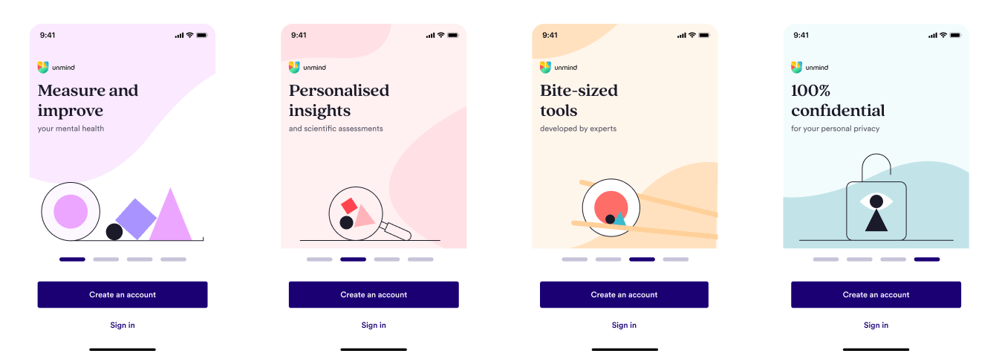
One thing at a time
Once employees entered the create an account flow they were hit in the face with a row of text boxes and information. On top of this there were no explanations given for required information, error messages would played havoc with the layout, accessibility was almost non-existent, placeholder labels would disappear once a field was in focus — the kind of things that make people hate forms.
I reduced this cognitive load by breaking the form into understandable steps so people could concentrate on one thing at a time, and make it easier to stay on task. Other added benefits to doing this were:
- Much better for mobile use
- Easier handling of errors per screen
- Easier for screen reader users
- Better for accessibility in general
- Creating space to allow for explanations of why we were asking for particular information
- Creating space for brand design layering
- Easier to add in or swap screens later
![A 'before' section shows a single 'Create an account' mobile screen with an email field, first name field, last name field, location dropdown field, department dropdown field, password field, and a 'create account' button all in onw long column. An 'after' section shows five mobile screens, each having a step counter at the top, the employee's company name, screen content, and a 'continue' button at the bottom. First screen reads 'What's your email? We just need to verify your work email.' with a work email field, second reads 'What's your name?' with a first and last name field, third reads 'About your work. This data is totally anonymous — it's used for overall company wellbeing insights.' with a work location dropdown field, forth reads 'Create a password' with a password field, and fifth reads 'Check your inbox. You'll get an email from us any moment now. We've sent it to (employee work email address).](imgadoption/solution_steps_native@1x.png/)
“I liked how everything was 'step-by-step' easy.”
Let employees use common variations of company names
Finding your employer was the first step of the registration flow and we found that almost 25% of users dropped off when failing to find their company on their first attempt — this only increased for each extra failed attempt.
Most of these failed attempts were for legitimate, existing clients of Unmind, but because we made employees use a “special code” to match to their company they were having to recall, or try and find, this exact code just to get started. This “special code” was literally our backend database's unique company identifier, meaning a lot of company “codes” made no logical sense to people.
There were two ways this system-first technical approach wasn’t matching the natural “common sense” way that employees knew their company.
-
Not allowing spaces or special characters
A common way people would write a company name wouldn’t work if the company name was more than one word
-
Not allowing for common variations of a company name
Any commonly known company name variations, or company subsidiaries, wouldn’t work either.
![A table split into 3 columns. First column has the company name 'Marks and Spencer', followed by the special code that is needed 'marksandspencer' (no spaces and only lower case), and the common names used are 'Marks and Spencer', 'M & S' (with spaces), and 'm&s' (no spaces) — all of these common names would not work. Second column has company name 'John Lewis and Partners', followed by the special code of 'jlp', and the common names used 'John Lewis', and 'Waitrose' — both of these would not work. The final column company name is 'Disney', the special code is 'disney', and the common names used are 'Disney' (a capital 'd' used, which would not work) and 'disney' (a lower case 'd' used, and it would work).](img/adoption/solution_old_no-variations@1x.png)
“Is it broken?...I'm putting in the right name right?”
This was the classic mental model mis-match of making users match the system, instead of the system adapting to how people behave in real-life. Throwing such a massive friction point in front of users so early in the registration journey was not conducive to building that trust in Unmind that we wanted.
Balancing business needs with user needs
100% of users, during usability testing, expected to have the ability to choose from a list of company names when they started typing in the company search field. This seemed like a no-brainer to improve the experience, but there was push back from Unmind’s commercial sales team. They didn’t want to make our client list easily accessible to competitors and we were contractually obligated to not publicly disclose the names of some large clients.
After exploring some concepts we all agreed on the idea of an “alias search” — allowing employees to search for their company against an approved list of company alias names. This allowed employees to use commonly known variations of their company name (with spaces and special characters), and conversely removed the exposure of our client list that the commercial team wanted. This wasn’t the ideal solution from my own UX point of view, but was a compromise I made to alleviate internal stakeholder concerns.
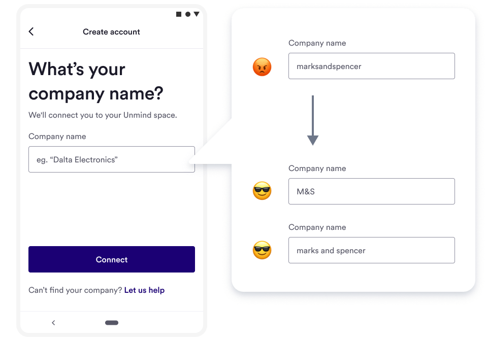
The improvement that wasn’t to be
An idea that we explored was removing the friction heavy "What is your company?" step completely, and extracting the company name from an employee's work email instead. There were two reasons we were excited to explore this direction.
- Most employees have a work email address, and those who don’t could still use an improved company search step
- Our system removed the cognitive load from users having to recall a “special” code — users only have to recall something they already know
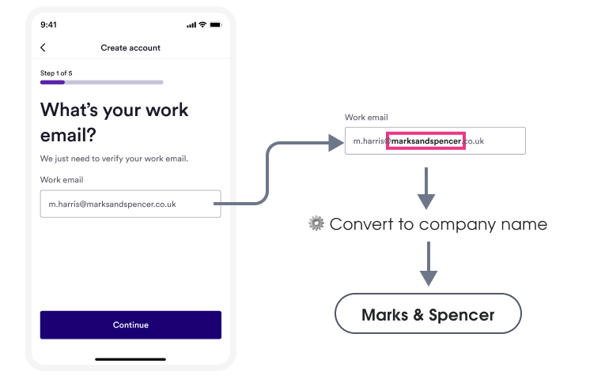
Sadly our initial understanding that this was a feasible idea turned out to be wrong. A week into our exploration we found out that changing the system architecture from "employee letting us know their company", to a "know company name from employee’s work email" involved untangling too many system dependencies — understandably we had to shelve the concept.
Ensure privacy runs through everything
I wanted to make sure that privacy and confidentiality concerns were fully addressed in an upfront, reassuring, and easy to understand manner. Speaking to users to understand this further we found that there were two main concerns to answer.
- “Will my employer be able to see information about me?”
- “What does the employer get out of this arrangement?”
Working with marketing and client success, we landed on wording that answered these two concerns and that we were all happy with. As these concerns were so important I made sure to prominently display them to employees as a dedicated full-screen. During usability sessions users appreciated this as it answered any lingering privacy concerns and showed that Unmind was a company prepared to be open and honest.
![A desktop and mobile screen side by side. The desktop screen is split into two halves. The left-hand side reads 'We take your privacy seriously. Unmind is 100% confidential. We'll never share your personal information with your employee. Employers only see anonymised data. They can see overall wellbeing — but not how you use Unmind personally. A button reads 'Continue' and underneath is a link to 'Read our privacy policy. The right-hand side is an illustration of a person sitting on a comfy chair using their mobile phone, inside a padlock shaped house. The mobile screen has the same as the desktop, but has no illustration.](img/adoption/solution_privacy@1x.png)
Going against best practice to ensure another layer of privacy
A design goal that I’d created after the discovery was to avoid bad actors finding out who uses Unmind in the registration process. Just being able to easily find out if someone used a mental health platform could lead to countless stress cases or harassment — we wanted to avoid anything like this happening.
If an account already exists, UX best practice is to inform the user with an error message and ask to try again. In our case, this could be used as a leading indicator that the user associated with the work email is an Unmind user — which is not what we wanted.
To safeguard Unmind users I created a flow where this error message was removed — a bad actor would just progress into the next step of the registration flow without being aware of a user's account.
This change did lead to a friction point for returning users who may have forgotten they had an Unmind account though. To alleviate this I swapped out the verification email, sent at the end of the flow, with an email advising the user they already had an account and automatically signing them in.
![A flow shows that after entering an Unmind account holder email there are two user flows. One flow shows a bad actor reaching a deadend. The second flow shows an actual account holder going through the registration and receiving an alternative email to the regular email verification. This alternative email reads 'Trying to sign in? We noticed you’re trying to create an Unmind account, but you already have an account with this email address. You can safely sign in to Unmind with a magic link (no password needed for this) — just tap the button'. There is a button which reads 'Sign in to Unmind'. There is additional smaller text that reads 'You received this email because you want to create an Unmind account with this address. If this wasn’t you then you can safely ignore this email'.](img/adoption/solution_privacy_avoid-bad-actor-verification@1x.png)
Creating a more friendly look & feel
Story as the backbone
People make quick decisions on what is trustworthy, and a first indicator is how something looks and feels to them. Creating the new registrations look and feel started with the employee’s story as the foundation.
![The story arc is split into three phases. The 'introduction' phase starts with an illustration of an arc slowly bending upwards, there is another illustration of a worried face that conveys a 'Do I trust registering with a mental health app?'. Beneath this are the introductory screens that will show Unmind's value and re-assurance regarding data privacy, and underneath this there are the brand objectives to 'dial up interest, use bright colours and movement, and create an honest feeling in the user'. As the story arc rises we see a hurdle illustration, and the second phase of the story starts — the 'task orientation' phase. This contains the screens where an employee is actually inputting their registration data. The brand objectives here are to 'remove distractions, and tone down the colours'. At this point the story arc illustration reaches it's upper peak, with an illustration of a happy face that seems to convey a 'Wow, that was really easy and answered my concerns!'. At the final 'peak-end' phase the screen flow ends with the welcome screen, and the brand objective is to be 'welcoming, use bright colours and movement, and dial up the excitement'. As the story arc illustration bends down to the starting level there is an illustration of a beaming face that conveys a 'I can't wait to see what is to come!'](img/adoption/solution_storyarc@1x.png)
I broke the registration journey into three distinct story parts:
- Intro: split screen, privacy screen (dialling up interest, bright colours, answering concerns before task, welcoming and honest start-point)
- Task orientated: signup flow (dialling down distractions, tone down colours)
- Welcome: welcome screen (dialling back up excitement, bright colours again, friendly end-point to the task)
Using this employee story as the backbone of the registration flow, and then layering the branding and UI framework upon it, became that first trust indicator for employee’s during registration.
Bring the story to life (with brand)
The current Unmind registration had no brand consistency with Unmind’s website and platform, causing an initial (and unwanted) user hesitancy.
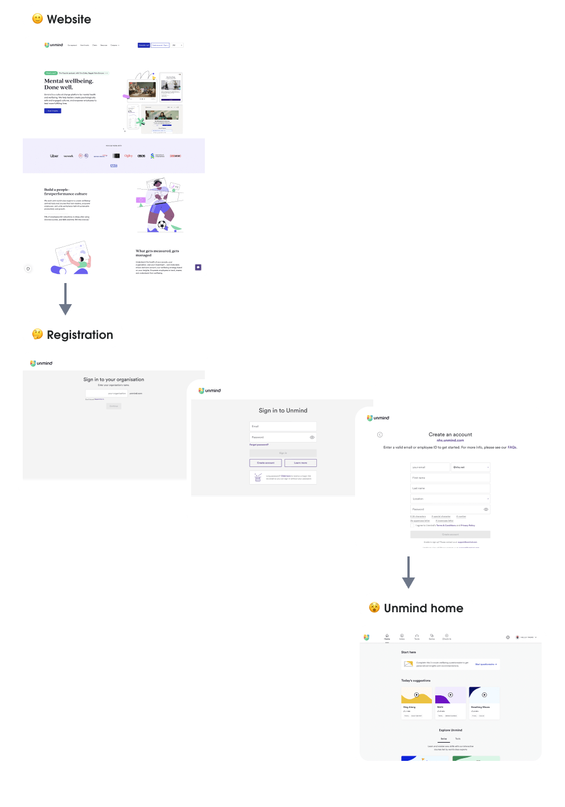
“Um, this is...different”
Collaborating with brand designers Josh (illustrations) and Eve (animations), we worked on how to use the Unmind brand to bring to life “story moments”, and create a much needed continuity between the website and the platform, with a warmth and friendliness that the employee story needed.
![Three desktop screens are shown. The first screen shows an illustration of a yoga master who is levitating in a cross-legged postion, looking serene. The screen headline reads 'Take a moment for yourself. The second screen shows an illustration of a person sitting in a comfy chair using their mobile phone, they are inside a padlocked shaped house with their pet dog sleeping peacefully at their feet. The screen headline reads 'We take your privacy seriously. The third screen show an illustration of three people waving and welcoming the viewer. The screen headline reads 'Welcome to Unmind, Koda'.](img/adoption/solution_brand-flow_new-web@1x.png)
![Five mobile screens are shown. The first screen reads 'Measure and improve your mental health', with an illustration of a circle, square, and triangle shapes sitting on a measuring tool. The second screen reads 'Personalised insights and scientific assessments', with an illustration of a magnifying glass with the circle, square, and triangle shapes being magnified. The third screen reads 'Bite-sized tools developed by experts', with an illustration of chopsticks holding a slice of sushi with the circle, square, and triangle shapes inside the sushi. The fourth screen reads '100% confidential for your personal privacy, with an illustration of a padlock with an eye (the eye is made out of the circle, square, and triangle shapes). The final screen reads ' Welcome to Unmind Koda, with an illustration of a plant that is growing surrounded by the circle, square, and triangle shapes.](img/adoption/solution_brand-flow_new_native@1x.png)
The employee story was also influential in updating our registration emails. The old emails were a hodgepodge of visual, layout, and tone of voice styles. Making these emails easier to read, and consistent with the brand and voice of the registration flow, was another small step to increasing people’s trust in Unmind.
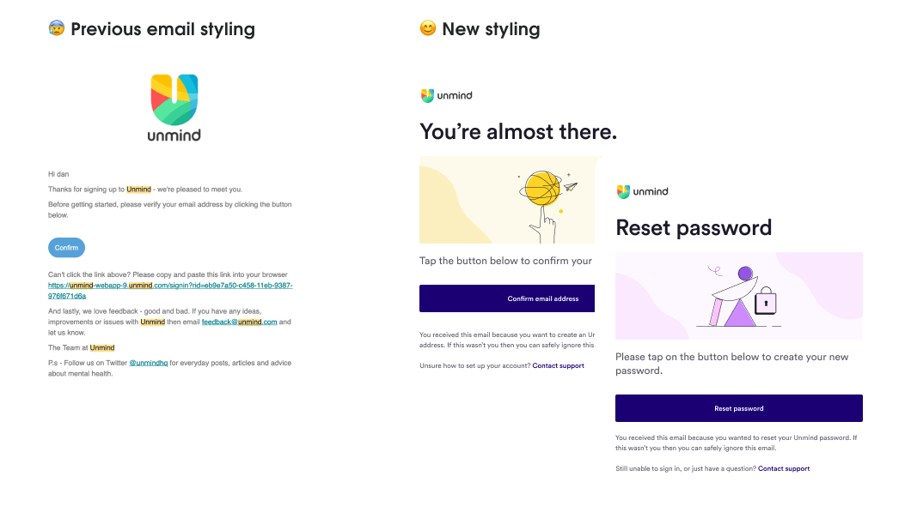
A cohesive UI framework
During this project our design system was still in its infancy, and our codebase was split into separate react-web and react-native codebases. There was no source of truth for components (and even colours and spacing), and developers always had to build features twice (across web and native). This was leading to a lack of consistency and user familiarity within our product.
To work within these constraints Rob (project lead developer) and myself designed a UI framework to maintain a consistent and familiar registration experience for users, and easier developer implementation across web and native platforms.
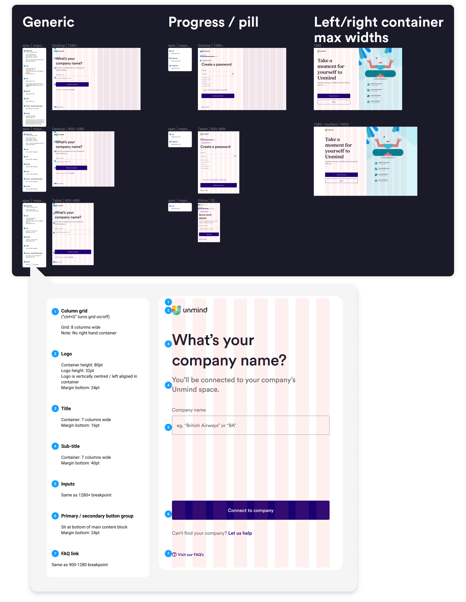
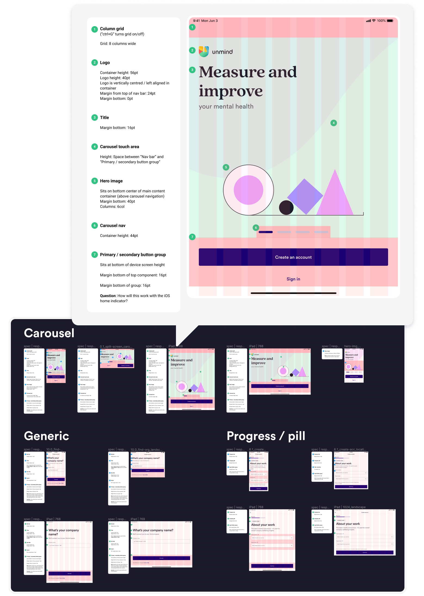
Improving accessibility for everyone
One of the building blocks to increase user trust is better usability, and to achieve this it’s fundamental to have an accessible product that removes any barriers people may have. Broadening the whole team's thinking about what usability is, and championing accessibility as a core part of this, was important for me to bring to our work.
Accessibility improvements
A lot of the accessibility changes were foundational basics like good colour contrast, simplifying language, making sure layouts didn’t break in different orientations and zoom levels, and making it work for accessibility tools (such as screen readers). Some noteworthy additions we did make were:
Including people with disabilities
Adding people with different access needs and perspectives to our usability testing was so beneficial to our accessibility understanding.
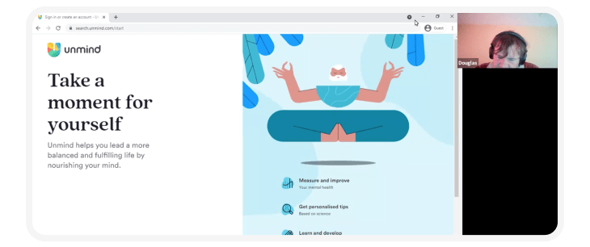
Improving password creation validation
A juicy technical and design challenge was how screen-readers would announce what password rules had been met, and not met, when creating a password. Visually the rules were marked off as a user typed, but when using a screen-reader, they were announced as they were marked off —which was a real distraction for screen-reader users.
We changed this so screen-readers would announce the password rules first, and then only after the user had left the field, would they announce any rules not validated.

Chunking the flow into steps
This made for a much more manageable and easy to digest flow. Error messaging is easier to fix, screen-reader users don’t have to wade through useless information, and information is not crammed together — bringing better balance and structure to help with neurodiverse needs.
Using clear alt-text for imagery
All required imagery now used alt-text, and I made sure that text captured the “story moment” that the brand visuals were trying to convey as well.
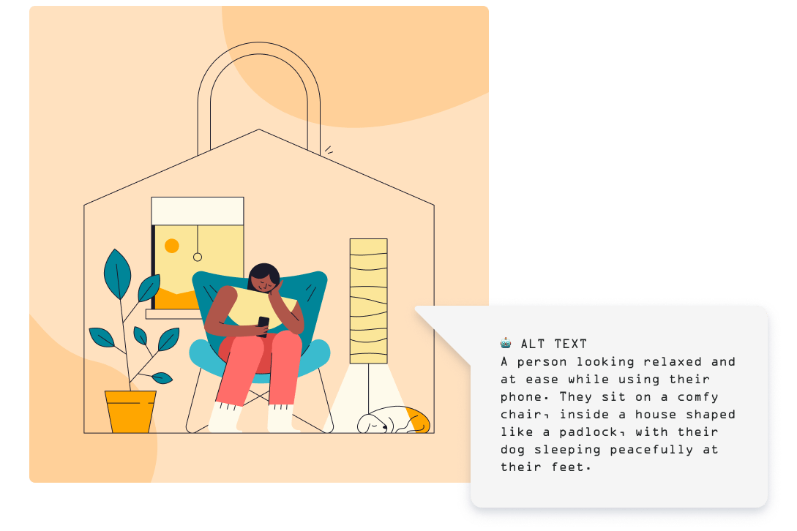
Driving company change
This project's accessibility improvements were one of the driving factors of a product-wide initiative to start meeting AA accessibility standards. Sharing with the company how our accessibility improvements increased usability, and showing video of real people with disabilities using our product was the impetus to make our product a lot more inclusive and move closer to a core value of Unmind as a mental health platform for all.
Reflections
Some trust issues are outside our sphere of influence
A usability session that really stuck with me was a participant stating that they would never register with Unmind — even though they really appreciated the new privacy screen. This person had so little trust in their employer, that they would never willingly share even anonymised personal data.
This trust in an employer was a big indicator of an employee successfully registering. No matter how much we increased their trust in Unmind, an employee who started with low employer trust would likely never register — a real lesson in accepting that an individual's life experience will always have an influence over the effectiveness of our designs.
Influencing a more inclusive product direction
By making accessibility a team priority, and sharing our progress and success with others, people were able to see how reducing access barriers for all aligned with Unmind’s “Everyone has the right to a healthy mind” mission. I was proud to see how our work positively influence product teams and leadership to include accessibility and inclusion as a product “must have”, and take concrete steps to make it happen.
Building trust with storytelling
Uncovering the underlying employee trust and privacy concerns became the foundational employee story to build our solution upon. By making the employee the hero of the registration journey, and sharing this story internally, everyone within Unmind could see what they could do to help the employee register successfully, and in-turn I quickly gained the trust of Unminder’s in understanding this vision.